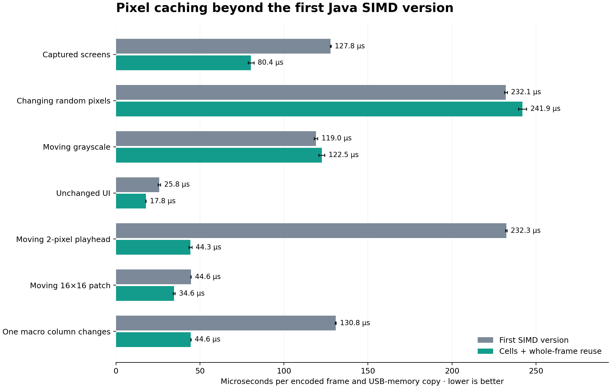

PULL / PERFORMANCE EVIDENCE / 16 OCTOBER 2026
Pixel caching, independent of display components.
Beyond the first SIMD version: 1.59× faster on captured screens,
2.93× on a changing macro column, and 5.24× on a moving playhead.
The unchanged debugger snapshot/PNG path improves by 268.3×.
Apple M5 Max · Bitwig’s bundled Zulu Java 25.0.4.1 · ordinary Java 21-compatible source · comparison baseline 28b7059c.
Any UI components, layouts or animation
↓
Finished 960×160 BGRA bitmap
↙ ↘
PushFrameEncoder Optional PushDebugFrame
exact pixel-cell cache immutable raw snapshot + PNG cache
SIMD calibration/packing capture worker + content generation
↓ ↓
Existing USB sender Debugger browser
Neither cache knows about components, pages or semantic column ownership. New components and overlapping drawings need no invalidation hooks. Hardware calibration remains separate from the debugger’s original pre-calibration pixels.

Hardware encoder: before and after caching
Cache bookkeeping has a cost when everything changes: random pixels are 4.3% slower and moving grayscale is 3.0% slower. Local and unchanged updates benefit most.
Means ± JMH 99.9% confidence intervals. Three forks, four one-second warmups and five one-second measurements per fork. Each workload rotates eight frames. Only captured screens are replayed real frames; the playhead, patch and macro cases are controlled synthetic updates. No measurements were discarded from the final suite.
Offline CPU evidence: encoding plus the full USB-memory copy. Rendering, controller callbacks, locks, scheduling and physical USB transfer are excluded. This does not establish the hottest path across Pull or measure input-to-screen latency. Nothing was installed into Bitwig.
Why this cache geometry
A direct whole-frame comparison returns early for identical input. Changed frames are checked by row and then by 60×1-pixel cells. Two cells fit a common 120-pixel macro column; one-row height avoids recalculating a whole column for a small label edit. Equality is exact, including alpha, with no hash-collision shortcut. Only changed cells are recalibrated. The complete wire frame is still submitted normally.
The encoder’s primitive arrays total 947,840 bytes, approximately 0.90 MiB. Row-local scratch arrays deliberately preserve matching loop indices. Calibration, channel packing and the final scalar short store remain separate so the JIT can vectorize the expensive arithmetic.
Before (first SIMD version):
for each row:
copy raw pixels
if row changed: calibrate and pack the entire row
copy complete wire frame to USB buffer
After:
if whole frame differs:
for each changed row:
for each changed 60-pixel cell:
remember raw pixels
SIMD calibrate and pack that cell
copy complete cached wire frame to USB buffer
Calibration still uses SIMD
Changing-random time: 241.93 µs normally versus 686.73 µs with -XX:-UseSuperWord (2.84× slower). This case changes every cell. The actual C2 output contains four-lane integer NEON multiplication, shifts and clamps.
0x000000011ce8cbe4 mul v18.4s, v22.4s, v18.4s ; NEON
0x000000011ce8cbe8 sshr v19.4s, v18.4s, #0x1f ; NEON
0x000000011ce8cbf8 mul v17.4s, v23.4s, v17.4s ; NEON
0x000000011ce8cbfc sshr v17.4s, v17.4s, #8 ; NEON
0x000000011ce8cc00 smin v17.4s, v21.4s, v17.4s ; NEON
0x000000011ce8cc08 smax v17.4s, v24.4s, v17.4s ; NEON
0x000000011ce8cc38 mul v18.4s, v22.4s, v18.4s ; NEON
0x000000011ce8cc3c sshr v19.4s, v18.4s, #0x1f ; NEON
Decoded assembly · Original JIT dump · SIMD control data
Debugger caching and CPU cost
These measurements combine raw snapshot capture and PNG generation on one benchmark thread. Production performs PNG work on its existing worker. Both benchmark versions use the same in-memory PNG sink; filesystem writes, HTTP transfer and browser decoding are excluded.
Identical samples reuse an immutable snapshot and its PNG, avoid rewriting latest.png, and preserve the browser’s decoded image. Changed samples use bulk BGRA-to-ARGB copying before PNG compression. Sampling counters and observation revisions keep advancing. A separate epoch/content generation changes only when the published image changes; older eight-field capture status remains supported.
NEXT_FRAME still waits for a later outbound bitmap observation, even if its pixels match the preceding frame. Queued captures retain their observed pixels. Alpha/dimension changes invalidate the cache, and failed browser image loads retry on a later observation.
The isolated browser check verified zero extra image downloads across three unchanged observations, one download for changed pixels, restart invalidation, same-content HTTP retry, and restoration after Reset. It used the production server and browser app with an isolated synthetic fixture.
Sampled latency
Separate two-fork sample-time runs, three one-second warmups and two three-second measurements. Shared-desktop observations, not real-time guarantees.
Interactive CPU flamegraphs
The macro workload shifts from calibration toward comparisons: vectorized exact matching accounts for about 40% of the new profile and the final output copy about 11%. For the unchanged debugger, the old PNG image-data writer accounts for about 79% of samples; the cached version spends essentially all its measured CPU in vectorized pixel comparison. These are inclusive shares within each run, not absolute time savings. Selected sample counts and shares.
Separate warmed-up 12-second CPU profiles at 1 ms intervals. Frame widths are proportions within a run; the faster run processes more frames. Click to zoom or search.
Rejected geometries and pilot evidence
Exploratory one-fork runs used two warmups and two measurements. They selected the geometry; the final three-fork measurements above provide the comparison. Larger 120×8, 120×16 and full-column 120×160 cells were also tried.
Pilot summary · Raw pilot data, logs and source prototypes
GPU assessment
Apple Silicon supports shared CPU/GPU memory; a separate discrete-GPU memory round trip is not inherently necessary. CPU/GPU access still needs synchronization. A frame contains 614,400 source bytes and 327,680 wire bytes, about 0.90 MiB combined.
Our inference: for this small CPU-produced, CPU-consumed workload, native integration, submission and completion latency deserve measurement before expecting a GPU win. The GPU has not been benchmarked here. Pixel-cell reuse already removes most arithmetic for local changes.
Validation and reproduction
1,182 Java tests passed, including all 16,777,216 RGB colors, cell/row/edge edits, immutable capture snapshots, request freshness, alpha/dimension invalidation and restart generations. The 19 focused encoder/capture tests also passed on Bitwig’s actual JVM, as did nine local HTTP-server tests and the debugger shell-client regressions. Live Bitwig/physical Push testing remains unperformed.
Reproduction instructions · Encoder raw data · Debugger raw data · Latency raw data · Exact commands · Environment, tests and source hashes · Package gate · Server tests · Client tests · Actual-JVM tests · First optimization report